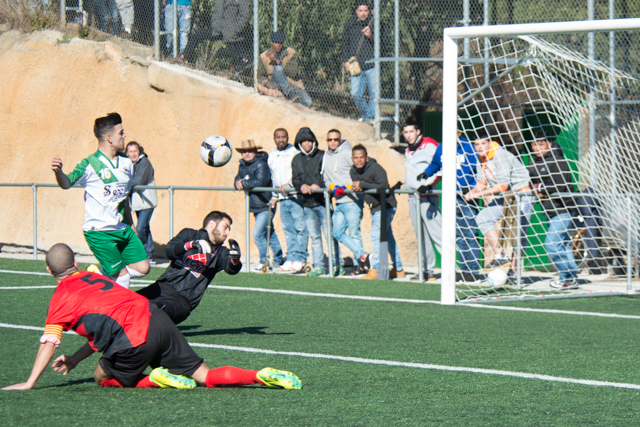

Noticias Sociales
Festa Major de Nou Barris
Amb la Festa Major, del 12 al 17 de maig, Nou Barris s’omplirà de color i optimisme. Durant aquests dies, la cultura i la diversió
transformaran la quotidianitat en l’alegria de viure en un barri acolorit que gaudeix activament de la seva gran festa ciutadana.
Enguany, com és tradicional, la Festa Major de Nou Barris aplega un conjunt de propostes per a tothom: concerts, balls, activitats
infantils i esportives, el mercat modernista, la mostra de mercats, la primera trobada de música instrumental, així com la trobada
de gegants i l’espectacle de llum i color a la font màgica de Manuel de Falla. També inclou diversos actes de commemoració del centenari
de la construcció de l’edifici de l’Institut Mental que actualment acull la Seu del Districte, com ara visites guiades i una exposició
especialment dissenyades per a aquesta celebració.
Tots els veïns i veïnes podreu gaudir aquests dies d’un munt d’activitats culturals i festives per a totes les edats, organitzades amb
l’esforç i la il·lusió de les entitats i equipaments del districte.
Us convidem a consultar el programa, o si el voleu descarregar, així com la seva versió accesible a l’adjunt. Participeu i gaudiu de la
nostra Festa Major.
Un bosque urbano
El Turó de la Peira no es un simple parque más, ya que tiene una atmósfera casi forestal. Ubicado en el distrito de Nou Barris,
tiene como puertas de acceso los barrios de Can Peguera y del Turó de la Peira, que lo rodean, lo envuelven y lo mantienen casi
en secreto.
Con cerca de ocho hectáreas de extensión, adentrarse en su frondoso pinar y disfrutar del olor de la vegetación mediterránea invita
a perder la noción de estar en una ciudad.
Deportes
Este año la federación ha realizado varios cambios importantes
Ahora para poder hacer la ficha, antes de que la pueda realizar el club, el jugador debe inscribirse en una página de la federación
(www.futbol.cat), pagar la mutua personalmente y automáticamente le permite al club hacer la ficha para que pueda jugar durante la
temporada.
Según la federación esta novedad (que ha venido impuesta por decreto ley en el mes de Junio) es para que el jugador pueda saber en
todo momento su historial futbolístico, su estado actual con el club en el que juega y su seguro en la mutua de futbolistas.
La mutua ha subido en algunos casos entre un 40 y 50% respecto al año pasado, y hay que pagar además una tasa de
10,80 euros, todo esto lo tiene que asumir el jugador, entrenador y delegado.

El Barrio al día
Inseguridad vecinal
Los Mossos d'Esquadra han detenido a 11 menores acusados de robos con violencia e intimidación en los alrededores de centros educativos
del distrito barcelonés de Nou Barris y a los que se les imputan siete robos violentos.
Los detenidos actuaban en grupos de dos o tres y amenazaban a sus víctimas con clavarles una navaja si estas no les entregaban sus
pertenencias. Fuentes policiales han señalado que la mayoría de los robos se localizaron en zonas de reunión de un grupo juvenil
conocido como Nuevos Grupos de Jóvenes Organizados y Violentos (NGJOV), cerca del barrio del Turó de la Peira, lo que generó un clima
de alarma social en el barrio y en la comunidad educativa.